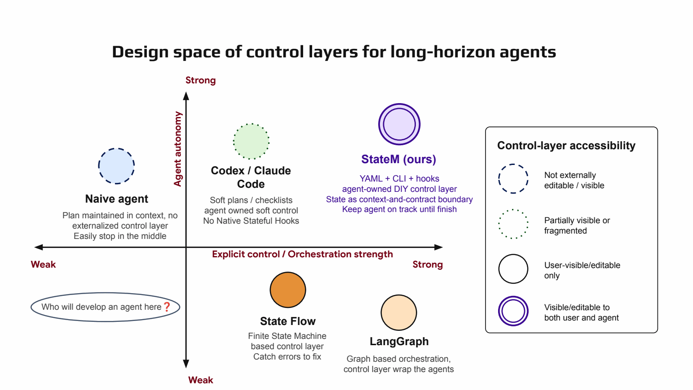
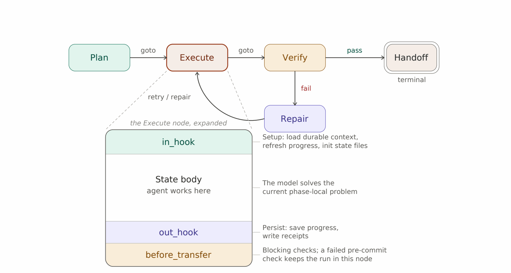
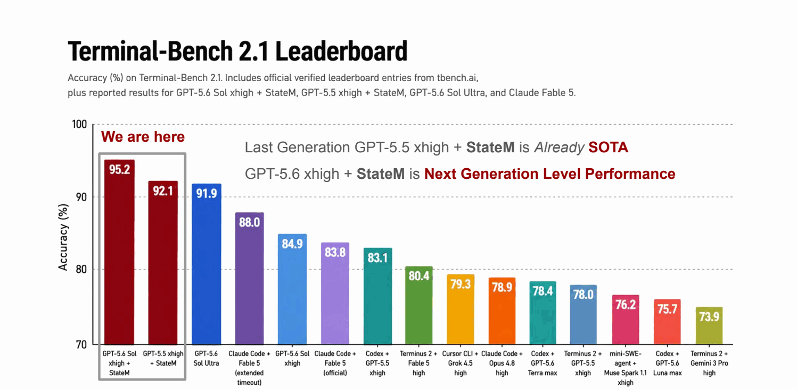
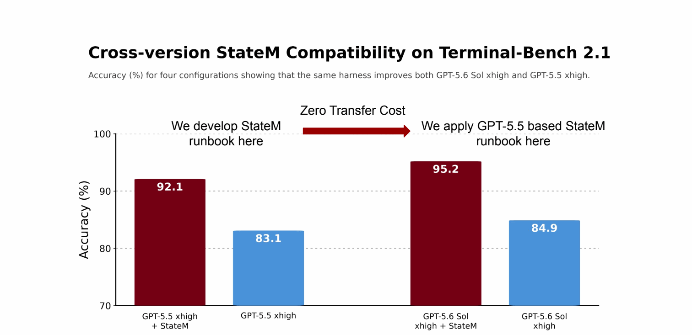
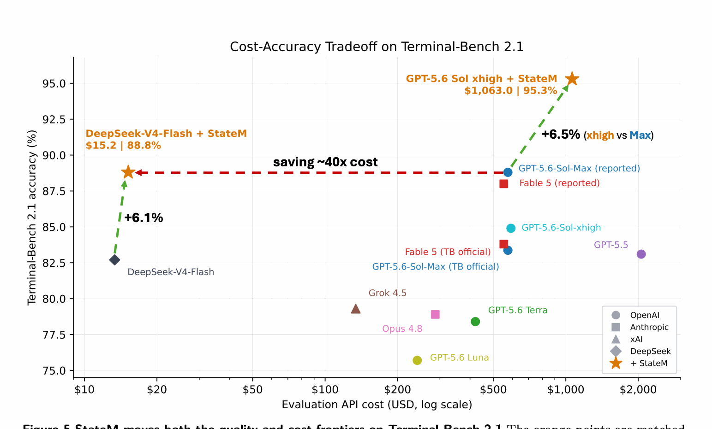
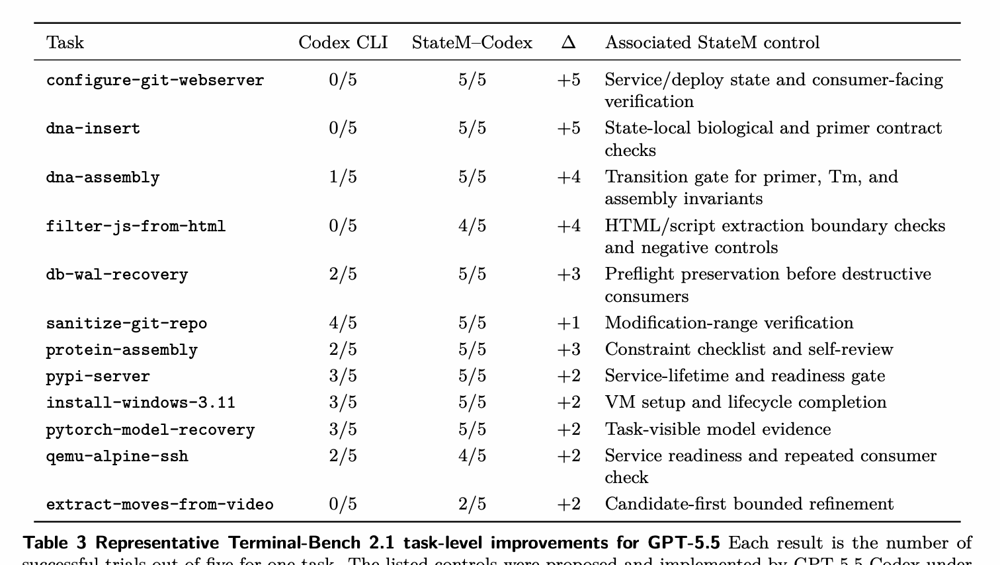

raw accuracy · GPT-5.6 Sol xhigh + StateM
Two frontiers · one agent-native harness
The model wasn’t
the bottleneck.
On Terminal-Bench 2.1, StateM scales the execution system around an agent — reaching a 95.3% quality frontier with GPT-5.6 and a $15 cost frontier with DeepSeek-V4-Flash.
DeepSeek final-evaluation evidence · 88.8% descriptive
92.1% vs 83.1% · GPT-5.5 xhigh
successful trials · all 89 tasks covered
STATUS 95.28% is the raw, pre-adjudication score of a public submission as of Aug 11, 2026 — not an official leaderboard result. DeepSeek results use separately disclosed operating conditions. Read the evaluation note.
OPEN MODEL × BETTER HARNESS
DeepSeek + StateM beats stronger closed systems without StateM.
Under standard timeouts, DeepSeek-V4-Flash with an adapted StateM profile reaches 88.09% — above the 84.9% GPT-5.6 Sol xhigh reference — with only $15.20 in final-evaluation API cost.
DeepSeek baseline82.7%
→DeepSeek + StateM88.1%
+5.39 pt full-suite lift88.09% standard timeout · 392/44589.09% 88-task common core~38× lower final-evidence cost
With an extended timeout only for the disclosed latency-sensitive gpt2-codegolf task, the descriptive aggregate reaches 88.76% (395/445), matching the separately reported 88.8% GPT-5.6 Sol max score at one-decimal precision.
QUALITY FRONTIER × COST FRONTIER = HARNESS SCALING · MODEL SCALING × HARNESS SCALING = RELIABLE EXECUTION ·
01 / THE THESIS
Capability and reliability are different scaling axes.
Long-horizon agents often solve every local step and still fail the run. The missing capability is frequently not inside the model — it is in the control layer that keeps execution oriented, verifiable, and recoverable.
Control signal dilution
A compact plan fades inside a growing trace of commands, observations, retries, and repairs.
Mutable-state ambiguity
The agent must reconstruct what is done, what failed, and what remains from append-only history.
Premature handoff
“Looks complete” replaces evidence. Required checks are skipped and partial effects escape into delivery.
statem / hypothesisScale the system around the model.
Externalize procedural state. Refresh the control context for the current phase. Require evidence before consequential transitions. Preserve the agent’s unified reasoning loop.

02 / THE CONTROL SURFACE
States are both context and contract.
StateM is a lightweight runtime the agent operates through the same CLI it uses for the task. Humans and agents inspect, edit, version, and audit one shared YAML runbook.
01Planload context
goto→02Executeopen-ended work
goto→03Verifycheck evidence
pass→04Handoffterminal state
runbook.yamlexecute:
in_hook: load durable context
prompt: perform phase-local work
out_hook: persist progress + receipts
before_transfer:
- tests pass
- required effects observed
- scope is cleanEntering a state refreshes the instructions, task facts, and durable progress relevant now.
Leaving a state requires explicit conditions. Failed checks keep execution in the current node.
After interruption or compaction, the agent resumes from authoritative state — not a reconstructed transcript.
The runbook is visible and editable to both user and agent, while runtime policy protects invariants.

03 / FIXED-MODEL LIFT
A thin control layer delivered a model-generation-sized gain.
On Terminal-Bench 2.1, StateM improved GPT-5.5 xhigh from the published 83.1% reference to 92.1% under the standard timeout budget — without changing model weights.
Terminal-Bench 2.1
Accuracy, higher is better
+ StateM baseline / reference

Harness gain ≈ model upgrade
The same GPT-5.5 base model recovers nine accuracy points when execution state and checks move outside the context.
Every task solved at least once
Across five attempts per task, the public GPT-5.6 submission recorded at least one success on all 89 tasks.
Flip failures with correct engineering practices
Consumer-facing verification and final-state consistency turned repeated failure into full success.
04 / CROSS-GENERATION FROZEN TRANSFER
The runbook crossed a model generation unchanged.
Developed with GPT-5.5, frozen, then applied to GPT-5.6 Sol xhigh with no target-model runbook modification. Procedural knowledge accumulated in the harness, not the weights.
Develop here
GPT-5.5 xhigh
+9.0 points
SAME RUNBOOK
──────────→
ZERO RETUNINGApply here
GPT-5.6 Sol xhigh
+10.4 points

“A portable execution layer can preserve gains across model generations.”
05 / CROSS-PROVIDER ADAPTED TRANSFER
A $15 frontier run moved the cost–accuracy curve.
Exact GPT practices did not cross the provider boundary unchanged. The runtime, high-level runbook structure, applicable controls, golden rules, and failure-analysis loop did — making provider-specific adaptation cheap.
DeepSeek-V4-Flash
Exact-profile transfer fails
Standard timeout · 392/445
One extended-timeout task · 395/445

Realized API charges for the complete DeepSeek final-score evidence.
Provider-specific profile adaptation from the reusable StateM structure.
All recorded DeepSeek adaptation and final-evaluation expenditure.
Lower final-evidence cost than the $574.68 public GPT submission comparator.
06 / CORRECT ENGINEERING PRACTICES
Flip failures with correct engineering practices.
StateM adds no new component-level capability in these cases. It composes existing capabilities with the minimum persistent control needed before a consequential handoff.
configure-git-webserver0 / 5 → 5 / 5
Final handoff is gated on fresh consumer-facing evidence: clone, commit, push, and curl. If verification perturbs the environment, the run stays repairable until final-state consistency is restored.
dna-insert0/5 → 5/5dna-assembly1/5 → 5/5filter-js-from-html0/5 → 4/5db-wal-recovery2/5 → 5/5protein-assembly2/5 → 5/5pypi-server3/5 → 5/5
07 / WHERE STATEM INTERVENES
Three gaps. Three control points.
StateM distinguishes unavailable knowledge, forgotten experience, and incomplete execution. Each failure source requires a different intervention.
Epistemic gap
Relevant knowledge or an appropriate method is unavailable at the decision point.
→ State-local context / in_hookProcedural-memory gap
A lesson from an earlier execution is not retained or reactivated when the risk recurs.
→ Versioned practicesProcedural-compliance gap
The right procedure is active, but the agent does not follow it completely before proceeding.
→ Checked transitions1Observe failuretrajectory + receipts
→2Abstract causecontrol-layer defect
→3Patch runbookhooks + checks + states
→4Review & evaluateregression + holdout
SELECTIVE PROCEDURAL MEMORY
Remember the boundary, not every failure.
Experience must be filtered before it becomes durable control. More remembered procedure is not automatically better.
08 / BUSINESSBENCH GENERALIZATION
Generalization follows mechanism match, not task diversity.
Family profiles were developed on separate development sets, frozen before the first held-out evaluation, and applied only where StateM had an appropriate execution boundary.
477 eligible instances across seven families · 405 treated instances across six families · Attendance Payroll abstained because no StateM workflow was applied.
62.91 → 75.12
Exact-decimal calculation, policy reconciliation, and mandatory-effect closure.
90.79 → 100.00
Task-derived query planning, data-plane execution, interval coverage, and durable publication.
The wrong boundary hurts
RefactorBench and WooCommerce reveal why profiles must be thinner and invariant-matched.
09 / OPERATIONAL ENDURANCE
22 hoursOne continuous harness-development run.
The hyper-agent preserved its current phase, transition history, unresolved obligations, and recovery anchor across long interaction history, context refresh or compaction, and stop-hook continuation.
This is evidence of day-scale operational endurance, not a claim of unbounded execution.10 / TRY STATEM
Give your agent a state it can return to.
StateM is a lightweight Python CLI. Write a small YAML runbook, start a durable run, and move only through checked transitions.
terminal$ git clone https://github.com/henryqin1997/statem.git
$ cd statem && pip install -e .
$ statem start examples/coding-agent.yaml --run-id demo
$ statem cur
$ statem goto planPAPER · 2026
StateM: Reaching 95.3% Raw Accuracy, or a $15 Frontier Run, on Terminal-Bench 2.1 via Harness Scaling
Ziheng Qin, Yaxin Lu, Zhangyang “Atlas” Wang, and Kai Wang
Open the latest manuscript →@article{qin2026statem,
title = {StateM: Reaching 95.3% Raw Accuracy,
or a $15 Frontier Run, on Terminal-Bench
2.1 via Harness Scaling},
author = {Qin, Ziheng and Lu, Yaxin and
Wang, Zhangyang and Wang, Kai},
year = {2026}
}Evaluation and scope disclosure
GPT quality frontier. The 95.28% figure is raw, pre-adjudication accuracy (424/445) computed by the Terminal-Bench 2.1 submission pipeline in public PR #142 as of August 11, 2026. The submission passed ten automated checks but remains open and is not leaderboard-listed. Scoring four review-identified rewarded trajectories as zero yields 94.38%; scoring all nine currently flagged trajectories as zero yields 93.26%. Five-trial task coverage is not single-run reliability.
DeepSeek cost frontier. Standard-timeout full-suite accuracy is 88.09% (392/445). The 88-task common core is 89.09% (392/440). The 88.76% descriptive aggregate replaces only five gpt2-codegolf trials with disclosed extended-timeout evaluation. $15.20 is realized final-evaluation API expenditure; $52.22 includes all recorded provider-specific adaptation and evaluation expenditure. Public comparator costs and scores may originate from different submissions, as disclosed in the paper.
BusinessBench. Only the first frozen held-out evaluation is untouched. Later selective refinements are post-evaluation diagnostic validation. Family sizes are unequal and each instance has one stochastic trajectory per arm.